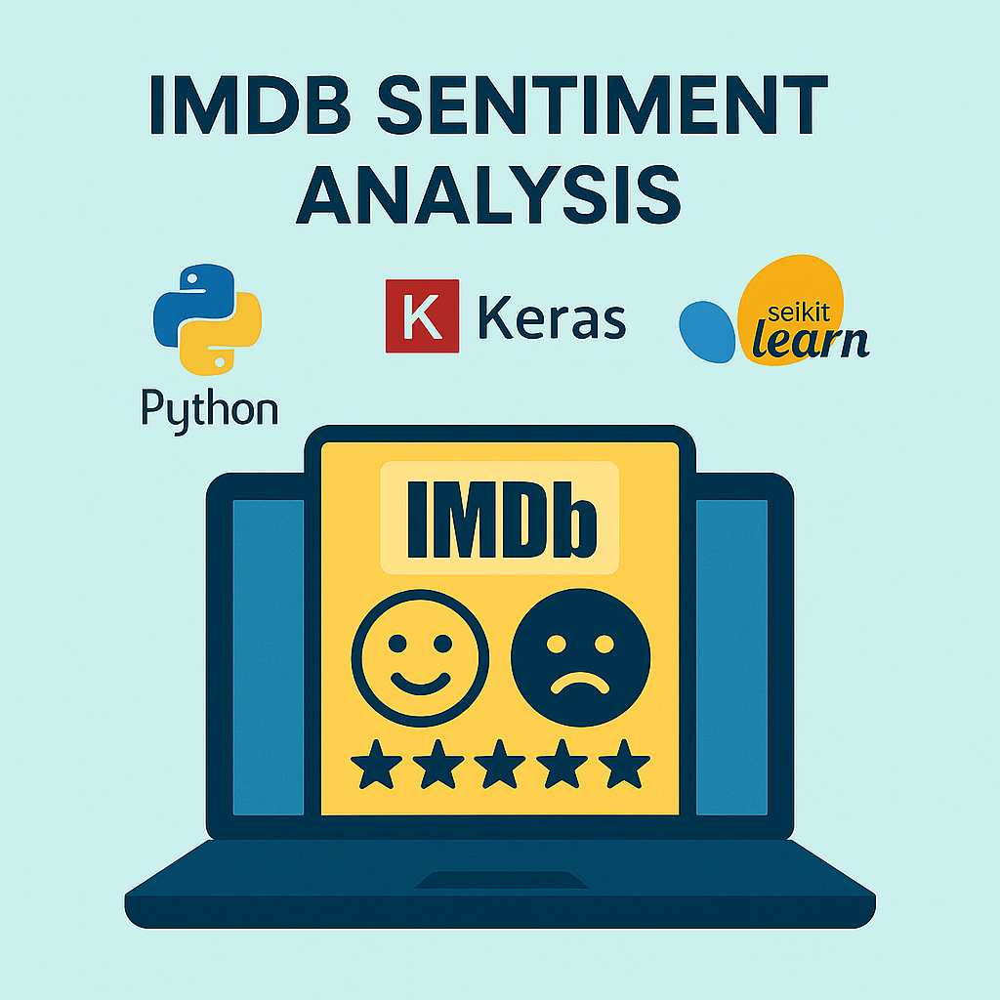

Machine Learning

Developed an offline domain specific Retrieval-Augmented Generation system using LangChain, BioBERT, Mistral 7B LLM, FastAPI, and Qdrant.
Built and deployed a full ML pipeline using CatBoost, Flask, and AWS to predict student performance in real time.
Built and evaluated regression-based price prediction models with thorough preprocessing and performance metrics analysis.
Deep Learning
Designed a computer vision-based system using OpenCV for gesture-controlled slide navigation with 88%+ accuracy.
Built a seq2seq BiLSTM model with attention for translating English to Spanish, achieving strong BLEU scores on parallel corpora.

Implemented and compared deep learning (LSTM) and classical (Logistic Regression) models for sentiment classification on 25,000 movie reviews.
Developed a supervised autoencoder on MNIST to learn 2D embeddings with improved class separability and classification accuracy.
Trained and optimized CNN models on the CIFAR-10 dataset, achieving 75%+ accuracy while evaluating regularization techniques.
Data Science
Built and deployed a full ML pipeline using CatBoost, Flask, and AWS to predict student performance in real time.
Built and evaluated regression-based price prediction models with thorough preprocessing and performance metrics analysis.
Implemented and compared deep learning (LSTM) and classical (Logistic Regression) models for sentiment classification on 25,000 movie reviews.
Web Development & APIs
Built a voice- and text-enabled AI assistant using Gemini Pro and Faster-Whisper, deployed on Oracle Cloud for 24/7 low-cost operation.
Designed and compared user management APIs using Flask, FastAPI, and Spring Boot with SQL backends and robust validation logic.
Built a Flask app using BeautifulSoup to extract and analyze keyword frequency from HTML content via web and CLI interfaces.
Designed and deployed a responsive portfolio site with interactive UI to showcase projects and resume, hosted on Netlify.
Tools & Automation

Built a local natural language-driven note-taking server using MCP and UV, integrated with Claude for dynamic conversational control.
Built a voice- and text-enabled AI assistant using Gemini Pro and Faster-Whisper, deployed on Oracle Cloud for 24/7 low-cost operation.
Designed a computer vision-based system using OpenCV for gesture-controlled slide navigation with 88%+ accuracy.